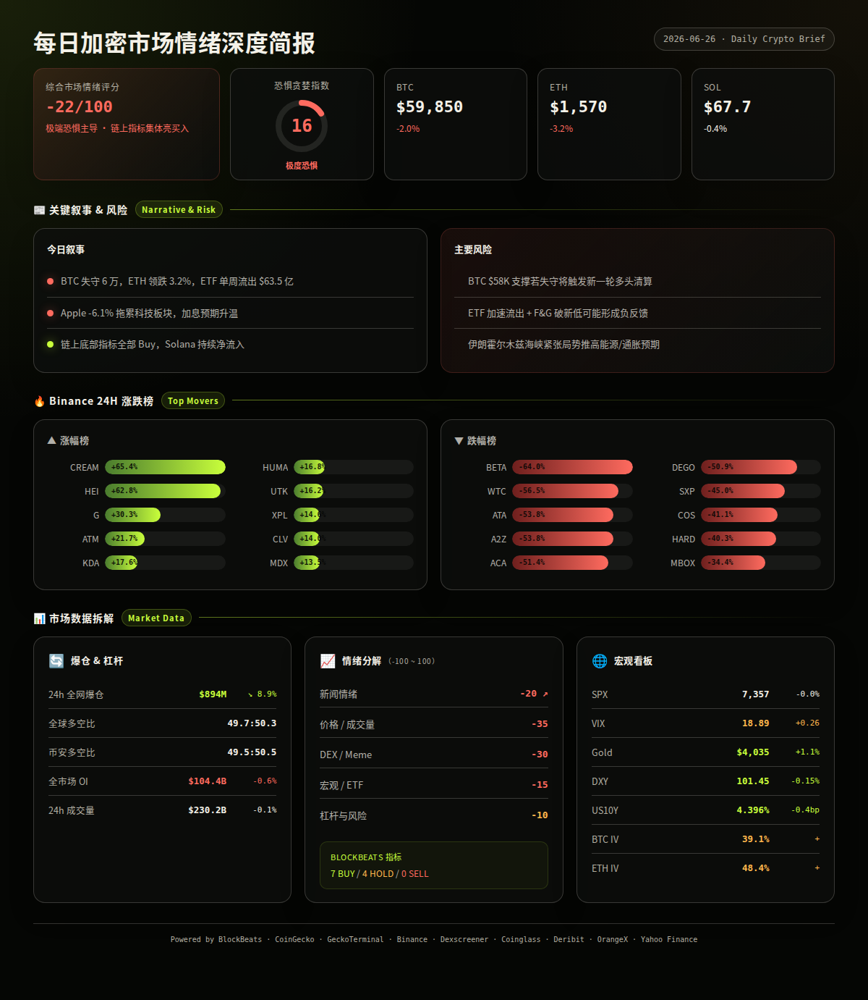
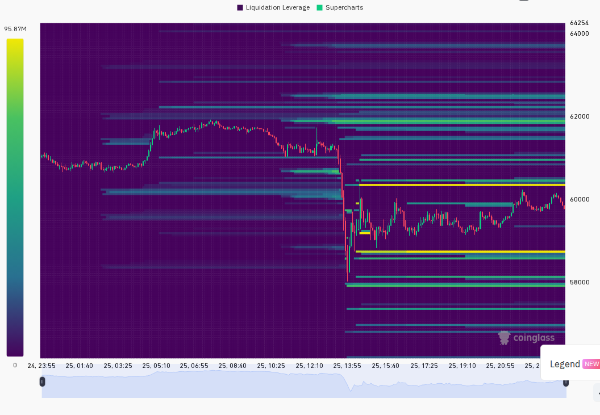
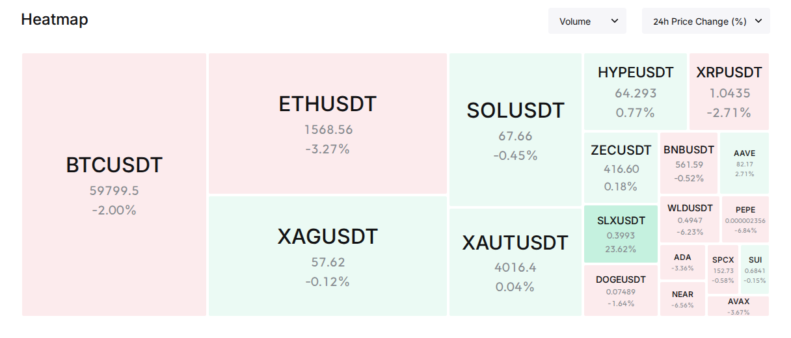

BTC 失守 $60,000 心理关口，ETH 同步下挫逾 3%，恐惧与贪婪指数跌至 16 的极端恐惧区间。美股分化剧烈（苹果暴跌 6.1% vs 美光暴涨 15.7%），宏观层面加息预期与地缘政治双重压力压制风险偏好。但 BlockBeats 12 项市场脉动指标罕见全数 Buy/Hold，Solana 链上 ONYC、WBTC、HYPE 等代币持续净流入，提示市场可能已接近局部底部区域（multi-source, analysis）。
━━━━━━━━━━━━━━━━━━━━━━
⏰ 1. 24小时变化:
恐惧与贪婪指数 16 极端恐惧
BTC $59,850 -2.0%
ETH $1,570 -3.2%
SOL $67.7 -0.4%
VIX 18.89 +0.26 正常区间
DXY 101.45 -0.15%
成交量 $230.2B -0.1%
爆仓 $894.4M -8.9%
━━━━━━━━━━━━━━━━━━━━━━
—— BTC / ETH / SOL ——
大盘全面承压，BTC 跌破 6 万关口带动山寨币普跌，但 Strategy 逆势增持、Solana 链上结构性强流入暗示机构仍在低位吸筹。
信息 1
BTC 24h 跌 2.0% 至 $59,850，盘中一度触及 $58,115 低点后反弹，日振幅达 $3,847（6.6%），成交量 $18.2 亿偏低，暗示真实抛压有限（Binance）。
信息 2
ETH 24h 跌 3.2% 至 $1,570，走势弱于 BTC，ETH/BTC 汇率持续走低，24h 高低区间 $1,533-$1,661，期货持仓费率为 -0.0017% 轻微偏空（Binance, CoinGecko）。
信息 3
Strategy 将美元储备提升至 $14 亿，同时扩大比特币持仓至 847,363 BTC，在 BTC 下跌中继续执行积累策略（LSEG/Reuters headlines, analysis）。
信息 4
BTC ETF 累计净流出 $63.5 亿，为近期最大规模资金撤离，反映传统市场投资者在 BTC 跌破 6 万时选择离场（LSEG/Reuters headlines）。
信息 5
SOL 表现相对抗跌，24h 仅跌 0.4% 至 $67.7，Solana 链上 DEX 交易量保持活跃，Solana 生态主流代币 HYPE、JUP、MU 均为链上净流入前十（Binance, BlockBeats top10_netflow）。
—— 宏观 / 地缘政治 ——
全球风险资产遭遇多重逆风：苹果单日暴跌 6.1% 拖累科技股、加息恐慌推高利率、伊朗威胁霍尔木兹海峡航运安全。
信息 6
美股严重分化：美光科技因存储需求超预期暴涨 15.7%，SanDisk 涨 22%，但苹果暴跌 6.1% 逼近 4 万亿美元市值失守，微软跌逾 3%。道指微涨 0.14%，纳指跌 0.46%，标普 500 基本持平（BlockBeats）。
信息 7
美联储 Williams 表态当前货币政策立场「完全能够」将通胀带回 2%，承认通胀仍「明显偏高」。美国货币市场利率因加息预期跳升（BlockBeats, LSEG/Reuters headlines）。
信息 8
Warsh 担任 Fed 主席后政策风格引发市场担忧：更安静的 Fed 可能意味着更动荡的市场和更高的利率（LSEG/Reuters headlines, analysis）。
信息 9
伊朗革命卫队被指在霍尔木兹海峡附近袭击新加坡籍货船，伊朗海事当局警告船只不得使用「未经批准」航线，中东航运风险溢价上升（BlockBeats）。
信息 10
前瞻：2026 美国中期选举加密货币行业集体捐款超 $1.6 亿，Coinbase $5,610 万、Ripple $4,960 万、Crypto.com 母公司 $3,860 万，加密游说成为本轮最大产业政治力量之一（BlockBeats）。
—— AI / 半导体叙事 ——
AI 硬件竞争急剧升温：Google 与 Amazon 联手挑战 Nvidia 霸主地位，但半导体板块内部剧烈分化。
信息 11
Google 和 Amazon 联手对 Nvidia 发起「全面进攻」，在数据中心 AI 芯片领域形成新的竞争格局。Nvidia 股价受此及机器人业务推进影响小幅下跌 0.8%（LSEG/Reuters headlines）。
信息 12
美光科技季度业绩远超预期，股价单日暴涨 15.7%，存储芯片赛道景气度确认上行。同时 Groq 放弃自研芯片转而筹集 $6.5 亿布局 AI 数据中心（BlockBeats, LSEG/Reuters headlines）。
信息 13
ON Semiconductor (ON) 单日飙升 7.6%，成交量放大，半导体板块内资金从 Nvidia/Apple 等传统龙头向存储、功率半导体轮动（LSEG/Reuters headlines）。
信息 14
Serenity 逆势看多硅光子赛道：SIVE（Sivers Semiconductors）被定位为激光二极管「瓶颈供应商」，AAOI 预计 2027 上半年月收入达 $4.71 亿，两者基本面未变（BlockBeats）。
—— 值得关注的标的 ——
Binance 涨幅榜 (USDT):
· CREAM: +65.4%
· HEI: +62.8%
· G: +30.3%
· ATM: +21.7%
· KDA: +17.6%
· HUMA: +16.8%
· UTK: +16.2%
· XPL: +14.6%
· CLV: +14.0%
· MDX: +13.5%
跌幅榜:
· BETA: -64.0%
· WTC: -56.5%
· ATA: -53.8%
· A2Z: -53.8%
· ACA: -51.4%
· DEGO: -50.9%
· SXP: -45.0%
· COS: -41.1%
· HARD: -40.3%
· MBOX: -34.4%
—— 融资 / VC ——
信息 15
区块链数据基础设施 Cambrian 完成 $600 万种子轮融资，Franklin Templeton 与 Polychain Capital 联合领投，此前已获 a16z CSX 加速器 $590 万 Pre-Seed，总融资 $1,190 万（BlockBeats）。
信息 16
算力市场基础设施 Ornn 完成 $3,300 万种子轮，a16z Crypto 领投。推出算力交易指数 OCPI 及 GPU 聚合平台 Ornn Compute，支持算力二级市场交易和按需租赁（BlockBeats）。
信息 17
链上交易平台 TurboFlow 完成 $600 万种子轮，Pantera Capital 领投。定位为「亚太版 Kalshi」，提供预测市场与永续合约，Beta 版已积累 1.5 万注册用户、$190 亿+ 交易量（BlockBeats）。
信息 18
英国正式敲定稳定币监管框架，计划于 2027 年落地实施，全球合规稳定币赛道加速（LSEG/Reuters headlines）。
—— X/Twitter KOL 信号 ——
信息 19
过去 24 小时 Tin 的 3 个 X List 共捕获 545 条推文，AI/Agent 叙事占比 24%（129 条）、加密市场 16%（87 条）、宏观/监管 3%（17 条）。Top 5 高互动推文全为社会/政治话题，加密相关内容曝光度极低，仅 $ETH 获得 2 次独立提及（X Lists, analysis）。
信息 20
X 信号整体呈低信号/高噪音特征：46% 内容为生活/噪音/未分类，加密代币提及分散且频率极低（最高仅 2 次）。若加密市场情绪 X 面如此冷淡，通常出现在洗盘后期或底部区域的概率较高（X Lists, analysis）。
━━━━━━━━━━━━━━━━━━━━━━
风险 1
BTC 短期面临 $58,000 支撑考验，若放量跌破可能触发新一轮多头爆仓
观察: 4h 级别 $58,000-$58,100 区间成交量是否放大；24h 爆仓金额是否从 $8.9 亿继续上升
失效条件: BTC 在 $58,000 上方 4h 收阳线且成交量配合回升至 $30 亿以上（Binance, Coinglass）
──────────────────────
风险 2
极端恐惧（F&G=16）叠加 ETF 大规模流出 $63.5 亿，若机构抛售趋势延续可能形成负反馈
观察: 明日 BTC ETF 净流入/流出数据，US10Y 是否站上 4.40%
失效条件: ETF 流出放缓至 $5 亿以下/日，且 F&G 不再创新低（LSEG/Reuters headlines, OrangeX）
──────────────────────
风险 3
美股科技龙头分化剧烈（Apple -6.1%）可能蔓延至整个科技板块，拖累加密风险偏好
观察: 明日标普 500 是否守住 7,300 点，VIX 是否突破 20 进入恐慌区间
失效条件: SPX 企稳反弹且 Apple 止跌回升（Yahoo Finance, analysis）
──────────────────────
风险 4
伊朗霍尔木兹海峡紧张局势升级可能推高能源价格，加剧通胀预期和加息恐慌
观察: 油价是否突破 80 美元关口，美军在该区域部署动向
失效条件: 伊朗与美国/盟国达成航运安全保障协议（BlockBeats, analysis）
──────────────────────
风险 5
Apple 单日暴跌 6.1% + 微软跌逾 3% 若延续，可能引发科技股指数基金赎回潮，且关联加密市场
观察: 明日 Apple 是否出现机构护盘买盘，纳指期货盘前走势
失效条件: Apple 在 24h 内出现 3% 以上的技术性反弹（BlockBeats, analysis）
非财务建议声明: 本报告仅提供市场数据和情绪分析，不构成任何买卖建议。
━━━━━━━━━━━━━━━━━━━━━━
· 6/26 — 美国核心 PCE 物价指数发布 — 若高于预期将强化加息预期，利空风险资产（宏观日历）
· 6/26 — 美股周度期权到期日 — 可能放大盘中波动，注意尾盘异动（宏观日历）
· 6/27 — 美联储官员密集讲话 — 关注是否有鸽派转向信号，任何降息暗示将利多 BTC（宏观日历）
· 持续 — 伊朗霍尔木兹海峡局势 — 若升级为军事冲突，油价和避险资产将联动反应（BlockBeats）
━━━━━━━━━━━━━━━━━━━━━━
综合评分: -22/100 (恐惧主导 · 但链上信号集体亮买入)
5 个维度:
新闻情绪: -20/100 — BTC 跌破 6 万、Apple -6%、ETF 大规模流出、伊朗地缘风险叠加；但 VC 融资活跃（Cambrian $600万、Ornn $3300万、TurboFlow $600万）提供底部支撑信号（BlockBeats, LSEG/Reuters headlines）
价格/成交量: -35/100 — BTC 失守 6 万心理关口、ETH 领跌近 3.3%，成交量偏低暗示真实卖压有限但买盘意愿更弱。SOL 相对抗跌仅 -0.4% 是唯一亮点（Binance, CoinGecko）
DEX/meme 活跃度: -30/100 — Solana 链上交易活跃度一般，新池质量不高。GeckoTerminal Solana trending pools 24h 成交量 > $1M 的仅有 EAGLE250/SOL、world/SOL、WEN/SOL 等少数标的，流动性偏低。X List 信号极弱，加密社群参与度下降（GeckoTerminal, X Lists）
宏观/ETF/流动性: -15/100 — VIX 18.89 仍在正常区间、US10Y 微降 -0.4bp 略有缓解、DXY 微跌 -0.15% 对 BTC 构成边际利好。但 BTC ETF 净流出 $63.5 亿极值、加息预期升温构成主要压制（Yahoo Finance, BlockBeats, LSEG/Reuters headlines）
杠杆与风险: -10/100 — 24h 爆仓 $8.94 亿较前日下降 8.9%，多空比接近 50:50 中性，OI 微降 0.6%。BTC/ETH/SOL 期货均小幅贴水（-0.04%），资金费率偏中性。整体杠杆风险可控，未出现极端多头拥挤的清算风险（Coinglass, Binance Premium）
BlockBeats Bottom/Top Indicator:
12 项指标: 7 Buy / 4 Hold / 0 Sell
整体市场流动性: Buy — 比特币流动性: Buy — 以太坊流动性: Buy
24h 累积 BTC 流动性: Buy — 合约多空比偏离: Buy — USDC/USDT 溢价: Buy
Binance USDT 借贷利率: Buy — OI 加权资金费率: Hold — Bitfinex 溢价: Hold
山寨币抗跌指数: Hold


以下为基于多源数据交叉验证的概率情景分析：
情景 1 (概率: 40%, 置信度: 中):
短期在 $58,000-$62,000 区间震荡筑底 — BTC 在 6 万附近多空博弈激烈，成交量萎缩表明卖方力量减弱但买方也缺乏信心。BlockBeats 12 项指标全部 Buy/Hold 提示底部信号强烈，但需时间消化负面情绪。F&G=16 极端恐惧历史上往往是中期布局区域。
关键条件: BTC 不跌破 $57,000 且持续在 $58,000-$62,000 震荡 2-3 天
若发生则 BTC 可能在 1-2 周内反弹至 $65,000-$68,000 区间，ETH 跟随至 $1,700-$1,800（multi-source, analysis）
情景 2 (概率: 35%, 置信度: 中):
进一步下探至 $55,000-$56,000 完成恐慌洗盘 — 若 ETF 持续流出且美股进一步下跌（特别是 Apple 继续破位），BTC 可能在短期杀穿 $58,000 支撑，触发新一轮杠杆多头爆仓。但 BlockBeats 底部指标和 Solana 链上净流入表明机构可能在 $55,000 附近集中接盘。
关键条件: BTC ETF 单日净流出 > $10 亿 或 SPX 跌破 7,200
若发生则 BTC 下探 $54,000-$56,000 后可能形成更高强度的反弹至 $63,000-$65,000，SOL 相对更抗跌（multi-source, analysis）
情景 3 (概率: 25%, 置信度: 低):
宏观环境恶化引发系统性风险释放 — Warsh 式 Fed + 伊朗局势升级 + 科技股崩盘形成三重打击，加密市场在宏观去风险周期中继续下跌。BTC 可能跌破 $52,000 进入技术性熊市。
关键条件: VIX 突破 25、US10Y 突破 4.50%、Gold 跌破 $3,800
若发生则 BTC 目标区间 $50,000-$52,000，需等待宏观企稳信号（multi-source, analysis）
━━━━━━━━━━━━━━━━━━━━━━
· BTC: $59,850，24h -2.0%，成交量 $18.2 亿，高低区间 $58,115-$61,962。1h 蜡烛 13 涨 10 跌，反弹动能存在但成交量偏低。期货微贴水 -0.04%，资金费率 +0.0053%（Binance, Coinglass）。
· ETH: $1,570，24h -3.2%，成交量 $7.0 亿，高低区间 $1,533-$1,661。走势弱于 BTC，1h 蜡烛 12 涨 11 跌。期货微贴水 -0.04%，资金费率 -0.0017% 偏空（Binance, Coinglass）。
· SOL: $67.7，24h -0.4%，成交量 $2.5 亿，高低区间 $64.0-$69.7。三大币种中表现最强，1h 蜡烛 11 涨 12 跌。期货微贴水 -0.05%，资金费率 +0.0032%（Binance, Coinglass）。
· 全球总市值: $2.15 万亿，BTC 占比约 55.8%（CoinGecko）。
· 爆仓数据: 24h 全网爆仓 $8.94 亿，较前日下降 8.9%，其中多头占比约 52%（Coinglass）。
· OI 与成交量: 全网 OI $104.4B（-0.6%）。Binance OI $17.5B（-2.2%），Binance 24h 成交量 $43.1B（+37.4% vs 前日）。Bybit OI $8.6B，Hyperliquid OI $6.0B（BlockBeats contract, Coinglass）。
· 宏观看板: SPX 7,357（+0.0% 24h, -1.9% 5d）/ VIX 18.89（+0.26, 正常区间）/ DXY 101.45（-0.15% 24h, +0.7% 7d）/ US10Y 4.396%（-0.4bp 24h, -6.7bp 7d）/ Gold $4,034.50（+1.1% 24h, -3.5% 5d）（Yahoo Finance, BlockBeats）。
· 期权波动率: Deribit BTC ATM IV 约 39.1%（低波动区间），ETH ATM IV 约 48.4%（正常区间）。ETH-BTC IV 价差 9.3pp，处于正常范围（<15pp），未出现山寨币投机溢价信号（Deribit）。
以下基于 CoinGecko trending + DEX 数据交叉验证：
Rain (RAIN) (Arbitrum):
$0.0157，24h -0.7%，市值 $98.1 亿。
DEX: 未检索到可靠 DEX 数据（集中交易为主）。
催化剂: Arbitrum 生态去中心化预测市场协议，CoinGecko trending 排名第 1，预测市场赛道在 TurboFlow、Kalshi 等带动下持续升温。
风险: 市值 $98 亿是否被交易所流动性支撑存疑，预测市场竞争加剧（CoinGecko, BlockBeats）。
Hyperliquid (HYPE) (Hyperliquid):
$64.36，24h +1.1%，市值 $143.2 亿。
DEX: Solana 桥接流动性约 $652 万，24h 成交量 $437 万（BlockBeats netflow）。
催化剂: 永续合约 L1 龙头，CoinGecko trending 第 2，Solana 链上净流入 $70 万排名第 4，持续获资金关注。
风险: 估值已高，市值 $143 亿附近对 DeFi 项目而言偏高（CoinGecko, BlockBeats）。
Plasma (XPL) (Ethereum):
$0.027，24h +14.2%，市值 $2.73 亿。
DEX: Binance 涨幅榜第 8 名。
催化剂: Echo Launchpad 生态代币，Echo Launchpad 赛道 24h 市值涨幅 +24% 在 CG 类别前列。
风险: Launchpad 赛道代币波动极大，+14.6% 在 Binance 涨幅榜排名中位（Binance, CoinGecko）。
━━━━━━━━━━━━━━━━━━━━━━
· GeckoTerminal Solana trending pools (24h 成交量 > $1M):
1. EAGLE250 / SOL: 成交量 $1.56M，-99.4%，流动性 $4,908（PumpSwap，极高风险）
2. world / SOL: 成交量 $2.30M，+9.8%，流动性 $163,701（PumpSwap）
3. WEN / SOL: 成交量 $2.02M，-78.3%，流动性 $35,286（PumpSwap，高风险）
· BlockBeats Solana top10_netflow:
1. ONYC: 净流入 $188 万，市值 $2.03 亿
2. WBTC: 净流入 $80 万
3. MU: 净流入 $70 万，市值 $376 万
4. HYPE: 净流入 $70 万，市值 $5,430 万
5. JUP: 净流入 $58 万，市值 $7.34 亿
6. ANTFUN: 净流入 $19 万，市值 $3.12 亿
7. SPYX: 净流入 $16 万，市值 $3,915 万
8. SPCX: 净流入 $14 万，市值 $594 万
9. QQQX: 净流入 $12 万，市值 $3,085 万
10. USELESS: 净流入 $11 万，市值 $7,243 万
· 备注:
Solana 链上 DEX 活跃度偏低，trending pools 中以高风险 PumpSwap 小币为主，缺乏高质量大流动性池子。ONYC 以 $188 万净流入领跑但市值仅 $2 亿，值得关注但不建议追高。CoinGecko trending 前 5 中 RAIN 和 HYPE 均为相对成熟的机构级项目，与 Solana meme 热形成对比——资金可能在从高风险 meme 向基础设施/DeFi 蓝筹切换。Binance 涨跌幅极端分化（CREAM +65% vs BETA -64%）提示当前市场存在大量低流动性山寨币的操纵性波动，需高度警惕尾部风险。